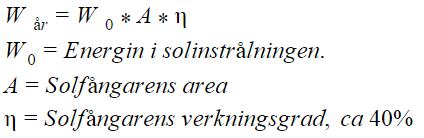

Komplett uppvärmnings-system
Solfångare är byggda för att koncentrerat fånga upp solens strålning, för att värma upp vatten. Vattnet går igenom solfångaren i kopparrör, ner till en ackumulatortank och värmer upp vattnet i tanken för att sedan pumpas tillbaka upp i solfångaren. I ackumulatortanken lagras det varma vattnet.
Den används för att ersätta användningen av el, ved, fossila bränslen etc. Den är mest produktiv under sommarhalvåret och kan ersätta all eluppvärmning av vattnet i en fastighet. Billigare och miljövänligare.
För att beräkna den maximala energin som kan plockas ut ur en
solfångare kan beräknas med följande formel:

Energin i solinstrålningen varierar mellan olika länder. I Sverige är den genomsnittliga solinstrålningen cirka 1060 w/m^2, jämfört med runt medelhavet där solinstrålningen kan vara uppåt 1900 w/m^2.
Det finns två olika typer av solfångare, vakuumsolfångare och plana solfångare. Skillnaden mellan de båda typerna är t.ex. att plana solfångare är billigare och generellt sett hållbarare än vakuumsolfångare, men de är också mer beroende av att sitta i ett bra söderläge med rätt lutning för att producera lika mycket värme.
Komplett uppvärmnings-system